Code
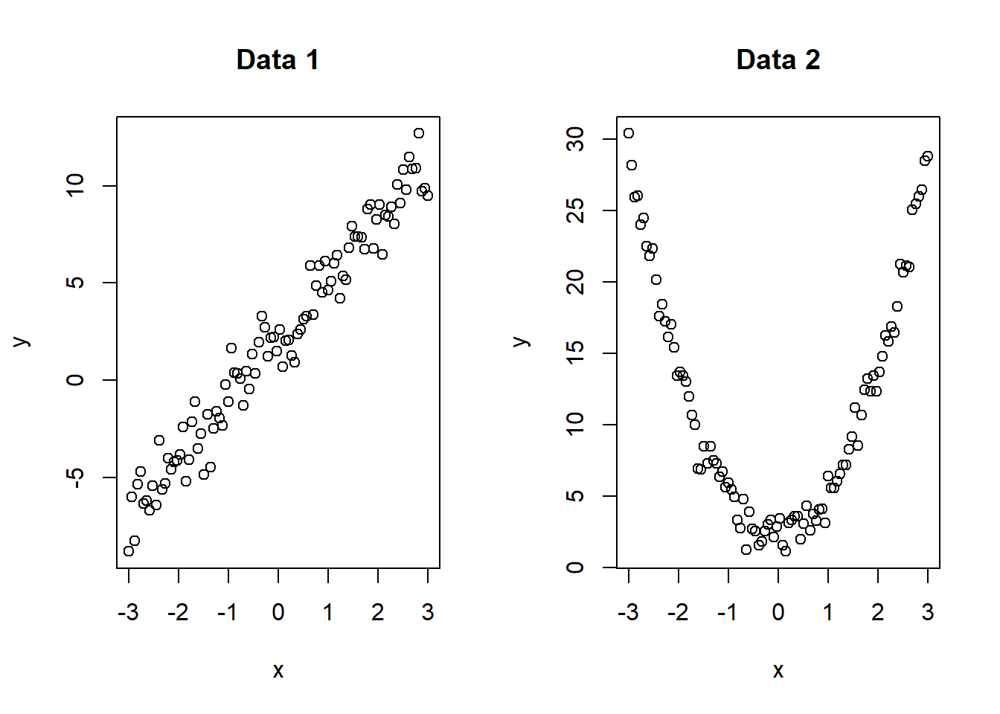
Lecture 01: LSE: \[\{\hat\beta_0, \hat\beta_1\} = \arg\min_{\beta_0, \beta_1} \sum_{i=1}^n (y_i -\beta_0 - \beta_1 x_i)^2\]
The LSEs are \[\hat\beta_1 =\frac{\sum_{i=1}^n (x_i - \bar{x})y_i}{\sum_{i=1}^n (x_i - \bar{x})^2}=\sum_{i=1}^n\frac{(x_i - \bar{x})}{S_{XX}}y_i.\] \[\hat\beta_0 = \bar{y} - \hat\beta_1 \bar{x} = \sum_{i=1}^n \left(\frac{1}{n} - \frac{\bar{x}}{S_{XX}}(x_i - \bar{x})\right) y_i\]
Lecture 02: CI, and hypothesis testing related to \(\beta_1\).
Lecture 03: Estimation and prediction.
Lecture (04): ANOVA.
Violating any of these assumptions can lead to problems with estimation, prediction, and inference.
Visualization is key to check these assumptions, especially plots based on residuals.
Assumption 1 states that the relationship between \(x\) and \(y\) is linear.
We can check this assumption using scatter plots.
Consequences of violating this assumption:
How to detect? Visualization is key!
x=seq(-3, 3, length.out = 100)
y1=2+3*x+rnorm(100)
y2=2+3*x^2+rnorm(100)
par(mfrow=c(2,2))
fit1=lm(y1~x)
fit2=lm(y2~x)
plot(fit1, which=1, main="Data 1")
plot(fit2, which=1, main="Data 2")
plot(x, fit1$residuals, main="Data 1", ylab="Residuals")
plot(x, fit2$residuals, main="Data 2", ylab="Residuals")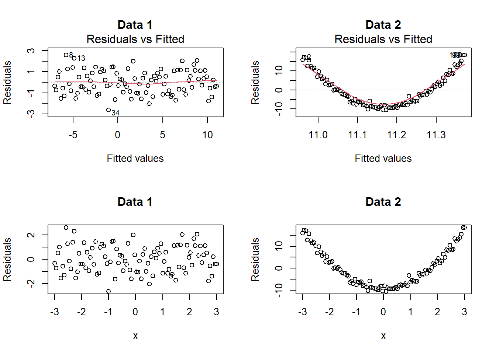
Assumption 2 states that the errors \(\epsilon_i\) are independent. A weaker assumption is that the errors are uncorrelated.
This is an important assumption but not easy to check.
When there is certain natural sequence (such as time or space) in the data we collected, the error terms can be correlated.
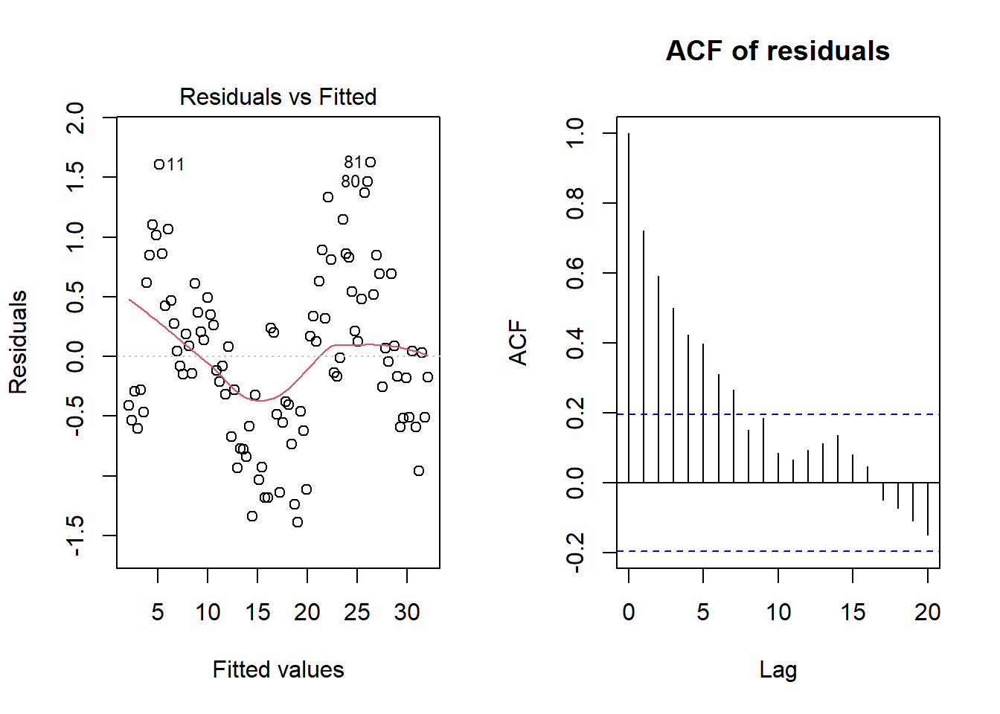
set.seed(2)
n=100
x=seq(-3, 3, length.out = n)
y1=2+3*x+rnorm(n)
y2=2+3*x+rnorm(n, sd=1+abs(x))
par(mfrow=c(2,2))
fit1=lm(y1~x)
fit2=lm(y2~x)
plot(fit1, which=1, main="Data 1")
plot(fit2, which=1, main="Data 2")
plot(x, fit1$residuals, main="Data 1", ylab="Residuals")
plot(x, fit2$residuals, main="Data 2", ylab="Residuals")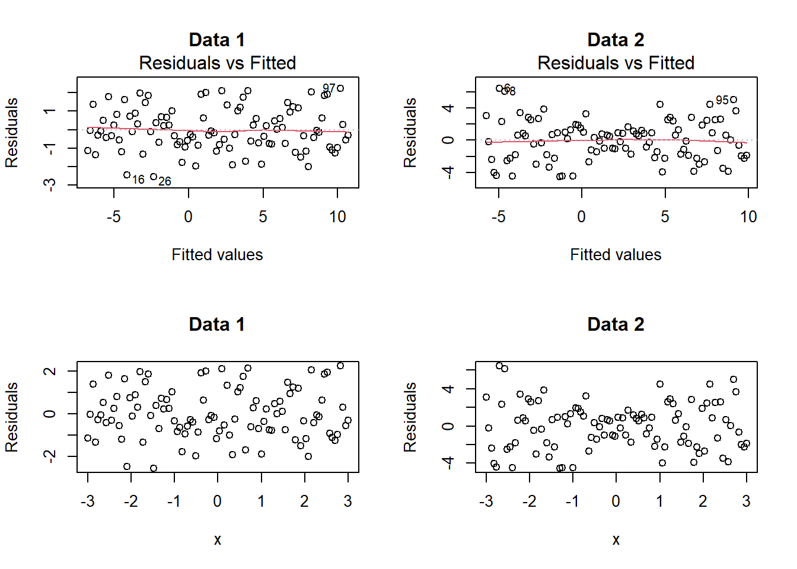
par(mfrow=c(2,3))
x <- seq(-3, 3, length.out = 100)
y1 <- 2 + 0 * x + rnorm(100)
y2 <- 2 + 3 * x^2 + rnorm(100)
y3 <- 2 + 3 * sin(x) + rnorm(100)
y4 <- 2 + 3 * x + rnorm(100)
y5 <- 2 + 3 * abs(x) + rnorm(100, sd = abs(x)^2+1)
y6 <- 2 + 3 * (x > 0) + rnorm(100)
plot(x, y1, main = "", ylab="y")
plot(x, y2, main = "", ylab="y")
plot(x, y3, main = "", ylab="y")
plot(x, y4, main = "", ylab="y")
plot(abs(x), y5, main = "", ylab="y")
plot(x, y6, main = "", ylab="y")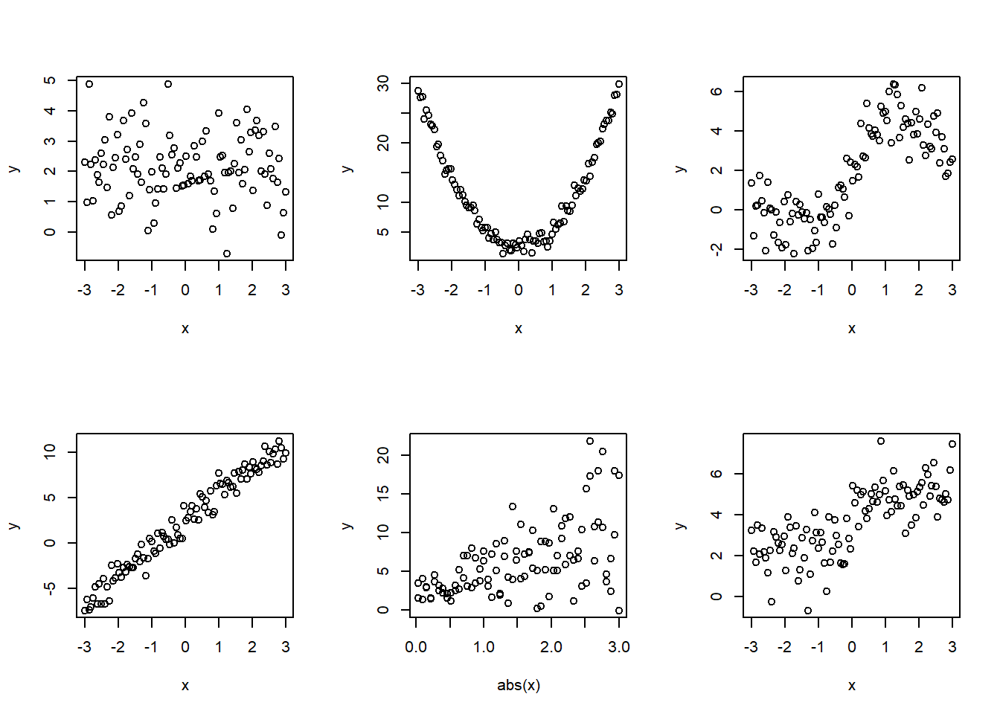
The errors \(\epsilon_i\) are normally distributed.
Consequences of violating this assumption: if the errors do not follow a normal distribution, as long as the other assumptions holds, the consequences are usually not serious.
How to detect? Visualization.
Histogram of residuals
set.seed(3)
n=100
x=seq(-3, 3, length.out = n)
y1=2+3*x+rnorm(n)
y2=2+3*x+rt(n, df=2)
y3=2+3*x+rlnorm(n)
y4=2+3*x+rexp(n)
fit1=lm(y1~x)
fit2=lm(y2~x)
fit3=lm(y3~x)
fit4=lm(y4~x)
par(mfrow=c(2,2))
hist(fit1$residuals, main="Data 1", xlab="Residuals")
hist(fit2$residuals, main="Data 2", xlab="Residuals")
hist(fit3$residuals, main="Data 3", xlab="Residuals")
hist(fit4$residuals, main="Data 4", xlab="Residuals")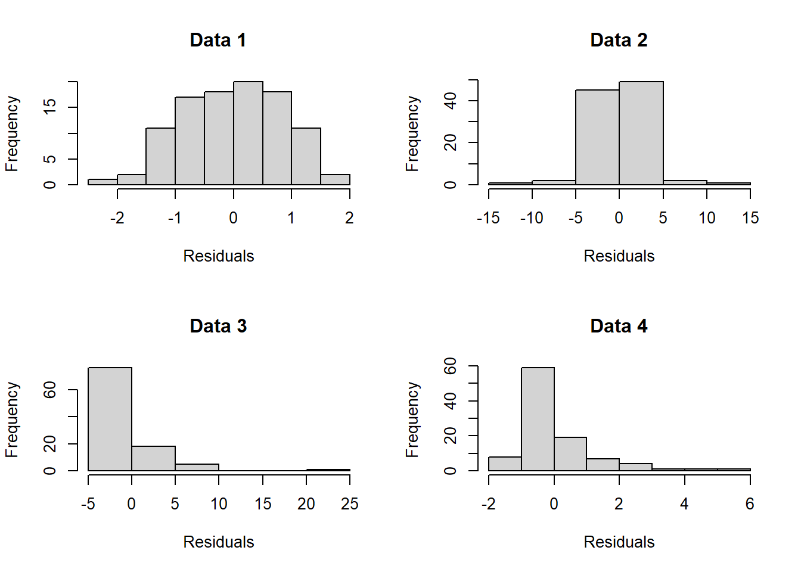
set.seed(2)
n=100
x=seq(-3, 3, length.out = n)
y1=2+3*x+rnorm(n)
y2=2+3*x+rt(n, df=2)
y3=2+3*x+rlnorm(n)
y4=2+3*x+rexp(n)
par(mfrow=c(2,2))
fit1=lm(y1~x)
fit2=lm(y2~x)
fit3=lm(y3~x)
fit4=lm(y4~x)
qqnorm(fit1$residuals, main="normal error"); abline(0,1,col="red")
qqnorm(fit2$residuals, main="t_2 error"); abline(0,1,col="red")
qqnorm(fit3$residuals, main="lognormal error"); abline(0,1,col="red")
qqnorm(fit4$residuals, main="exp error"); abline(0,1,col="red")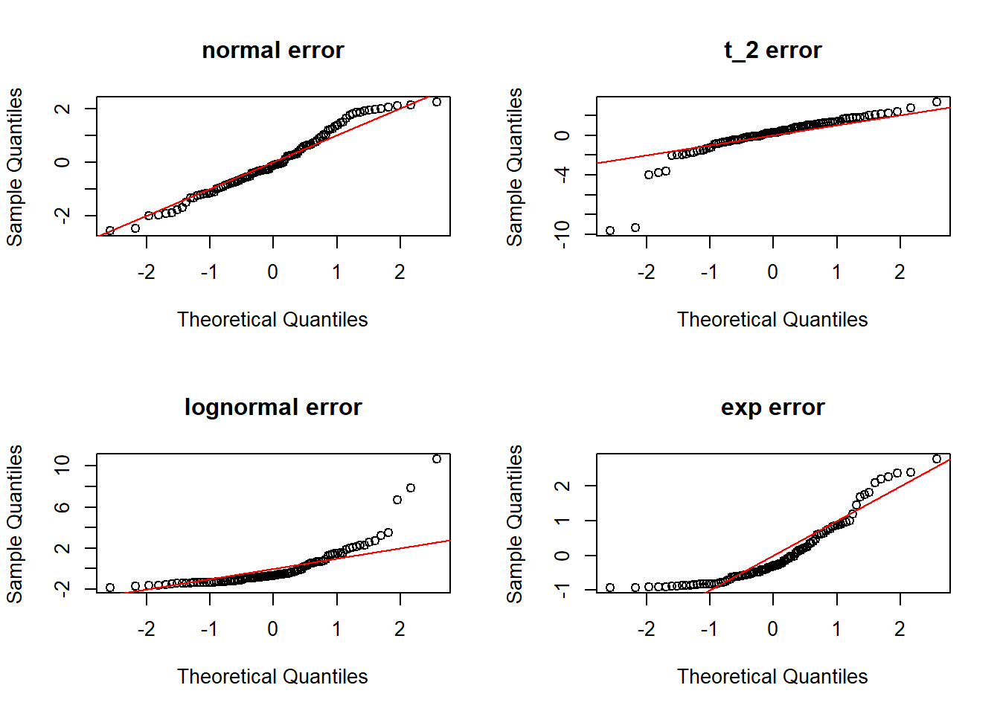
set.seed(123)
n <- 1000
std <- function(x) (x - mean(x)) / sd(x)
# Generate samples (then standardize)
x_normal <- std(rnorm(n))
x_heavy <- std(rt(n, df = 3)) # heavy tail (t3)
x_thin <- std(rbeta(n, 3, 3)) # thin tail (bounded, var=1)
x_left <- std(-rgamma(n, shape = 2, rate = 1)) # left-skewed
x_right <- std(rgamma(n, shape = 2, rate = 1)) # right-skewed
x_bimodal <- std(c(rnorm(n/2, -2, 1), rnorm(n/2, 2, 1))) # bimodal
data_list <- list(
"Normal" = x_normal,
"Heavy-tailed (t, df=3)" = x_heavy,
"Thin-tailed (Uniform)" = x_thin,
"Left-skewed (−Gamma)" = x_left,
"Right-skewed (Gamma)" = x_right,
"Bimodal (Mixture)" = x_bimodal
)
par(mfrow = c(3, 2), mar = c(3.5, 3.5, 3, 1))
for (nm in names(data_list)) {
x <- data_list[[nm]]
qqnorm(x, main = "", pch = 19, cex = 0.6)
qqline(x, lwd = 2)
}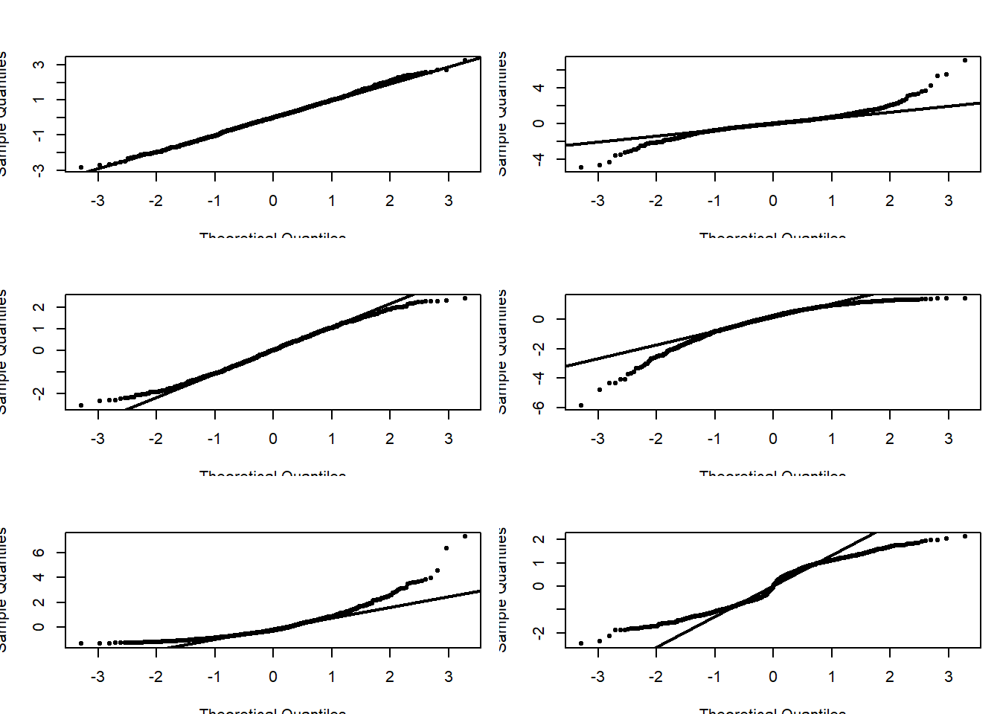
data_list <- list(
"Normal" = x_normal,
"Heavy-tailed (t, df=3)" = x_heavy,
"Thin-tailed (Uniform)" = x_thin,
"Left-skewed (−Gamma)" = x_left,
"Right-skewed (Gamma)" = x_right,
"Bimodal (Mixture)" = x_bimodal
)
par(mfrow = c(3, 2), mar = c(3.5, 3.5, 3, 1))
for (nm in names(data_list)) {
x <- data_list[[nm]]
qqnorm(x, main = paste("Q–Q:", nm), pch = 19, cex = 0.6)
qqline(x, lwd = 2)
}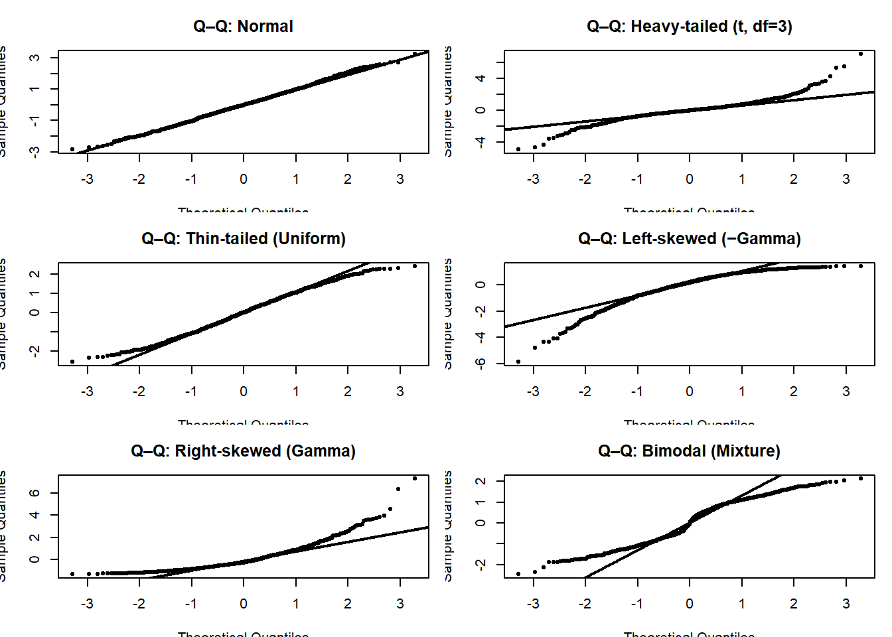
## -------- Plot 1: Histograms with N(0,1) overlay --------
par(mfrow = c(3, 2), mar = c(3.5, 3.5, 3, 1))
for (nm in names(data_list)) {
x <- data_list[[nm]]
hist(x, breaks = "FD", freq = FALSE, col = "grey85", border = "white",
main = nm, xlab = "", ylab = "Density")
# Kernel density estimate
lines(density(x, adjust = 1.2), lwd = 2)
# Standard normal overlay
xs <- seq(min(x), max(x), length.out = 400)
lines(xs, dnorm(xs), lwd = 2, lty = 2)
legend("topright", bty = "n", cex = 0.9,
legend = c("KDE", "N(0,1)"),
lty = c(1, 2), lwd = 2)
}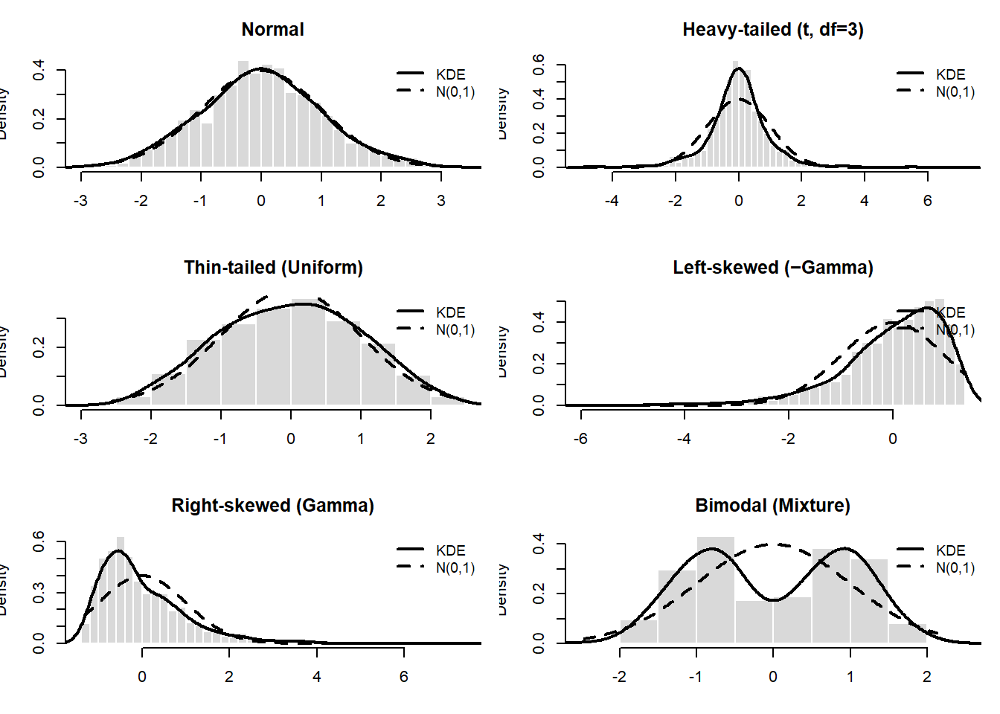
Summer temperature averages in Mount Airy, NC and Charleston, SC (1937-2021)
mtair=read.csv("../data/mta1.csv", head=TRUE)
fit <- lm(Charl ~ MtAiry, data = mtair)
mtair$resid <- resid(fit)
mtair$fitted <- fitted(fit)
par(mfrow=c(1,2))
plot(mtair$Year, mtair$resid, type = "b", pch = 19,
xlab = "Year", ylab = "Residual",
main = "Residuals vs Year")
abline(h = 0, lty = 2)
acf(mtair$resid, main = "ACF of OLS Residuals")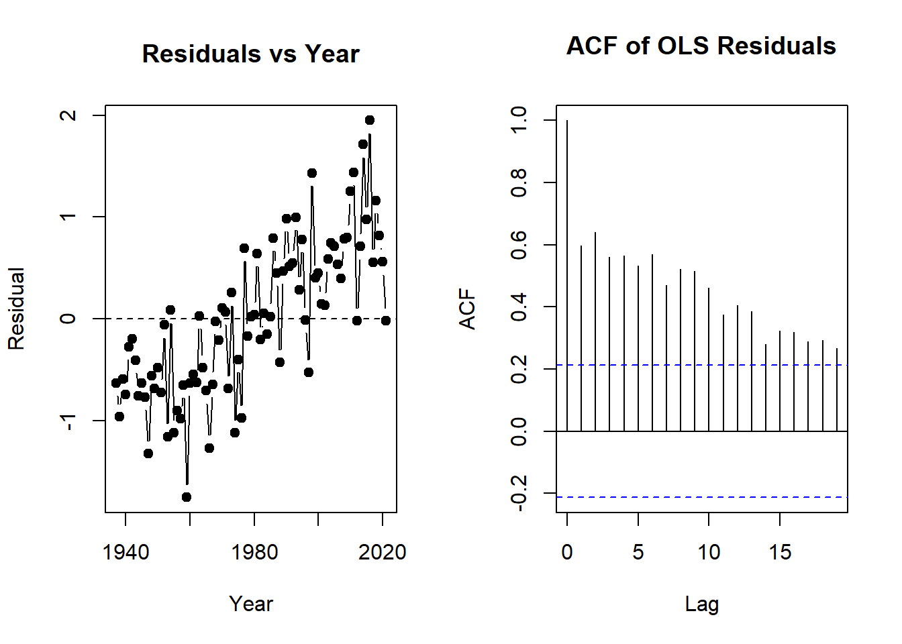
Durbin-Watson test
data: fit
DW = 0.79721, p-value = 4e-10
alternative hypothesis: true autocorrelation is not 0
Breusch-Godfrey test for serial correlation of order up to 1
data: fit
LM test = 30.753, df = 1, p-value = 2.931e-08
Breusch-Godfrey test for serial correlation of order up to 4
data: fit
LM test = 45.225, df = 4, p-value = 3.569e-09
Box-Ljung test
data: mtair$resid
X-squared = 275.67, df = 8, p-value < 2.2e-16Background: Predicting cycle life of lithium-ion batteries from initial cycles
Source: MathWorks Predictive Maintenance Toolbox
Scatter plot:
battery=read.csv("../data/battery.csv")
par(mfrow=c(2,2))
hist(battery$cycleLife,
xlab="cycleLife",
main="Histogram of cycleLife")
hist(battery$DeltaQvar,
xlab="DeltaQvar",
main="Histogram of DeltaQvar")
qqnorm(battery$cycleLife,
main="Q-Q Plot of cycleLife")
qqline(battery$cycleLife, col="red", lwd=2)
qqnorm(battery$DeltaQvar,
main="Q-Q Plot of DeltaQvar")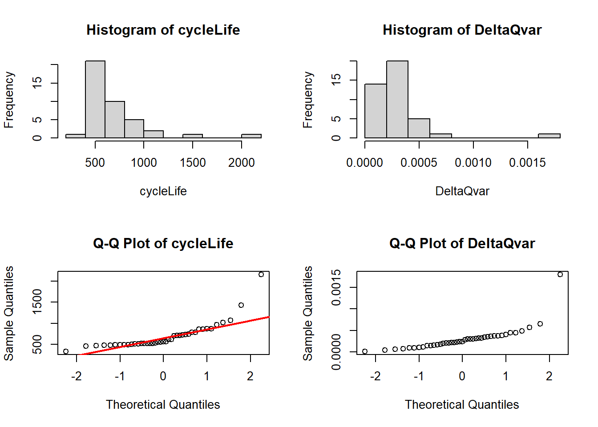